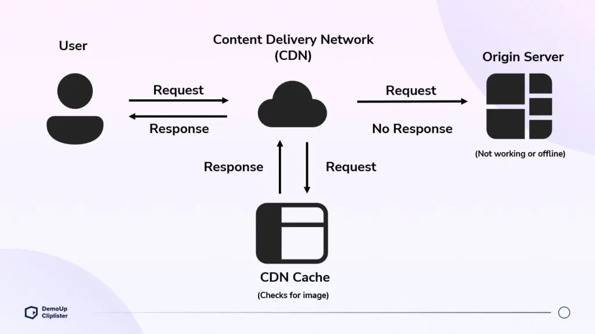
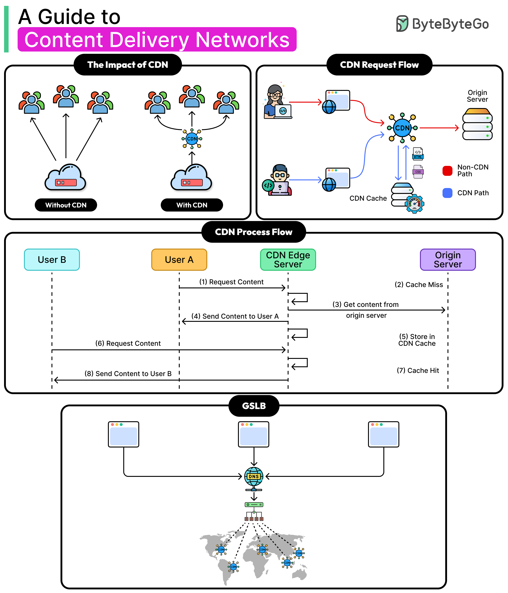

System Design Mastery
Master scalable systems with premium insights
🌐 CDN: Content Delivery Network
1️⃣ What is CDN?
A Content Delivery Network is a network of geographically distributed servers that deliver content to users from the nearest location instead of a single central server.
CDNs mainly serve:
- 🖼️ Images
- 🎬 Videos
- 📄 CSS / JS files
- 📦 Static assets
- ⚡ Sometimes cached API responses

2️⃣ Why Does CDN Exist?
CDN exists to solve:
- 🌍 High latency for distant users
- ⚖️ Heavy load on origin servers
- 🐌 Slow content delivery
By serving content from nearby servers, CDN:
- ⚡ Reduces response time
- 😊 Improves user experience
- 🛡️ Reduces origin server load

3️⃣ What Breaks Without CDN?
Without a CDN:
- 🐌 Users far from server experience slow load times
- ⚖️ Origin server handles all traffic
- 💥 Server overload during traffic spikes
- 📹 Poor performance for images and videos
📌 Real-World Example:
Users in India accessing a US server → slow website → users leave ❌. This results in poor conversion rates and lost revenue.
4️⃣ When to Use CDN / When NOT to Use
✅ When to Use CDN:
- 🌐 Global user base
- 📦 Static content (images, videos)
- 📈 High traffic applications
- 🎬 Media delivery
❌ When NOT to Use:
- ⚡ Highly dynamic data
- 🔄 Real-time updates
- 🔐 Sensitive or personalized data
- 💳 Payment processing
📋 Real Examples:
- ✅ E-commerce images: Product photos, static pages
- ✅ Video streaming: Movie and music content
- ✅ Landing pages: Marketing websites
- ❌ Bank balances: Real-time account data
- ❌ Live chat messages: Dynamic conversations
- ❌ Payment processing: Security sensitive
5️⃣ One Common Mistake
🚨 Using CDN for Dynamic or Personalized Content
- 📊 CDN serves cached content
- 😢 Users receive incorrect or stale data
- 🔄 Personalization doesn't work
👉 Always configure caching rules properly. Only cache truly static, public content.
6️⃣ Real App Connections
🛒 E-commerce
- ✅ Product images → CDN
- ✅ CSS/JS → CDN
- ❌ APIs → Backend servers
🎬 Streaming App
- ✅ Videos → CDN
- ✅ Thumbnails → CDN
- ⚡ Metadata → Cache + DB
📰 News Website
- ✅ Articles → CDN
- ✅ Images → CDN
- ⚡ Comments → API
7️⃣ Why Not Use CDN Everywhere?
CDN adds overhead:
- 💰 Adds cost per GB transferred
- ⚙️ Requires configuration and setup
- 🔐 Not suitable for real-time or sensitive data
👉 Use CDN only for content that can be cached safely and is not user-specific.
8️⃣ CDN vs Application Cache: Key Differences
| Aspect | CDN Cache | Application Cache |
|---|---|---|
| Location | Edge (near user) | Backend (near DB) |
| Purpose | Reduce network latency | Reduce database load |
| Data Type | Static / public | Dynamic / app data |
| Personalization | ❌ No | ✅ Yes |
| Auth Required | ❌ No | ✅ Yes |
| Who Controls | CDN provider | Application |
Key Insight: CDN and Cache solve different problems at different layers. CDN is for static, global content, while caching is for dynamic, frequently accessed data inside the system.
CDN reduces latency by serving static content from edge locations, while caching reduces backend load by storing frequently accessed dynamic data. Both are required for a scalable system.
CDN does cache data internally, but it only caches static, public content at the edge; application caching is still required to handle dynamic, personalized, and database-heavy workloads.
🧠 Summary
A CDN delivers static content from geographically distributed servers, reducing latency and load on origin servers.
It improves performance for global users but should not be used for dynamic or sensitive data. For a complete solution, use CDN for static assets and application caching for dynamic data.
💡 Pro Tip: Popular CDN Providers
Major CDN Services:
☁️ Cloudflare
275+ edge locations, DDoS protection, workers.
📦 AWS CloudFront
AWS ecosystem integration, Lambda@Edge.
⚡ Fastly
Real-time cache purging, Compute@Edge.
🎬 Akamai
Largest CDN, excellent media delivery.
Best Practice: Cache static assets with long TTLs (1 year), enable compression (Gzip/Brotli), version assets, and always monitor cache hit rates to optimize performance.